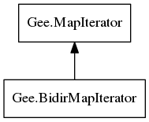

Gee.BidirMapIterator – gee-0.8 Reference Manual
Packages
gee-0.8
Gee
BidirMapIterator
first
has_previous
last
previous
BidirMapIterator
Object Hierarchy:

Description:
[
GenericAccessors
]
public
interface
BidirMapIterator
<
K
,
V
> :
MapIterator
<
K
,
V
>
Namespace:
Gee
Package:
gee-0.8
Content:
Methods:
public
abstract
bool
first
()
public
abstract
bool
has_previous
()
public
abstract
bool
last
()
public
abstract
bool
previous
()
Inherited Members:
All known members inherited from interface Gee.MapIterator
mutable
read_only
valid
fold
@foreach
get_key
get_value
has_next
next
set_value
unset